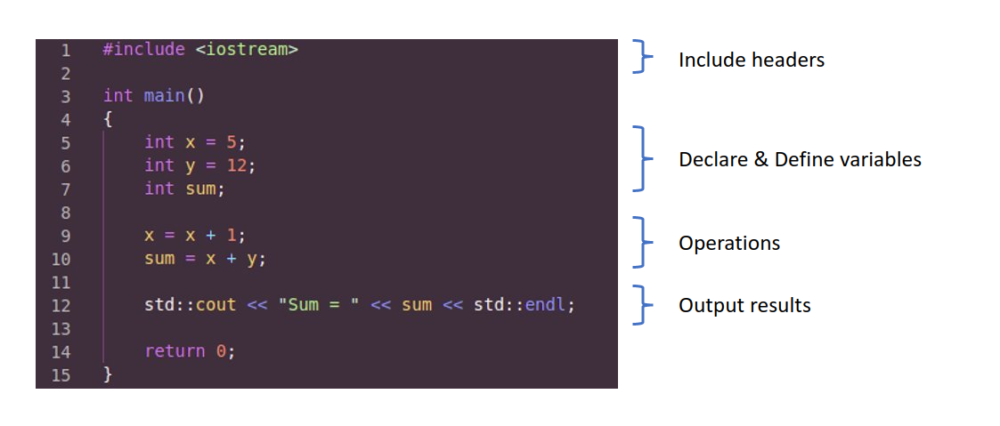

Program Structure
The is a bare minimal valid C++ code, with an entry point and do nothing.
int main ()
{
return 0 ;
}
In C++, the default entry point is the main() function. However, it is not necessarily to be main() and the programmer can specificaly tell the compiler the entry point to be somewhere else.
Let's use the code below as example
Header Files
The C/C++ Standard Library offers its users a variety of functions, one of which is header files.
In C++, all the header files may or may not end with the .h or .hpp extension but in C, all the header files must necessarily end with the.h extension.
A header file in C/C++ contains:
- Function definitions
- Data type definitions
- Macros
It offers the above features by importing them into the program with the help of a preprocessor directive #include. These preprocessor directives are used for instructing compiler that these files need to be processed before compilation.
For example, in C++ program has the header file <iostream> which stands for input and output stream used to take input with the help of cin and cout respectively.
There are 2 types of header files:
- Pre-existing header files: Files which are already available in C/C++ compiler we just need to import them
- User-defined header files: These files are defined by the user and can be imported using
#include
The #include preprocessor is responsible for directing the compiler that the header file needs to be processed before compilation and includes all the necessary data type and function definitions.
The same header file cannot be included twice or more in any program.
Declaration
A C++ program consists of various entities such as variables, functions, types, and namespaces. Each of these entities must be declared before they can be used.
A declaration specifies a unique name for the entity, along with information about its type and other characteristics. In C++ the point at which a name is declared is the point at which it becomes visible to the compiler. You can't refer to a function or class that is declared at some later point in the compilation unit. Variables should be declared as close as possible before the point at which they're used.
The name that is introduced by a declaration is valid within the scope where the declaration occurs.
For more information about how scope rules interact with declarations, see Scope.
Definition
Some entities, including functions, classes, enums, and constant variables, must be defined as well as declared.
A definition provides the compiler with all the information it needs to generate machine code when the entity is used later in the program.
Operation
Computing and manupulating statements happen here. This is the core of the program where the algorithms or tasks of the program are to be done.
Output
Finally, output the final result. It can be writing the result into a file, doing some other specific tasks, or most commonly, printing the result in terminal.